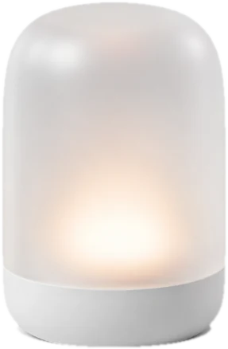

The device
Always on, at home. It hears you across the room, answers out loud, and keeps your memories and chats on its own storage.
Luma is a small glowing device that talks like a person, remembers what matters to you, and gets real work done on your phone and computer. Your life stays at home.
Also for Intel Macs and Windows.

Say "ngl that album kinda mid" and Luma answers like a friend from the same group chat. Write like you're at work and it stays polished. It picks up your words, your pace, and your humor, and never puts on a voice that isn't yours.
Ask for something big and it runs it as a project: research, a deck, a website, checked piece by piece and handed back to you.
Good evening, Jay.
Your mom's birthday. The drawer with the spare keys. That you hate cilantro. Luma keeps the details you share, sorts them into people, places, likes, dates and plans, and lets you flip through all of it on your phone.
Fix anything it got wrong, or make it forget, with one tap. Nothing is kept that you can't see.
Always on, at home. It hears you across the room, answers out loud, and keeps your memories and chats on its own storage.
Today's chats, everything Luma remembers, and how much room is left on the device. Talk to it from anywhere.
Pair it, and Luma can use it for you: your browser, the folders you choose, your apps. It asks before it changes anything, and you can stop it anytime.
Start on your computer today with Luma Desktop. It sets itself up, and it's free to use.
Free keeps your newest 200 memories. Luma Plus remembers everything and adds your own Luma number for texting.